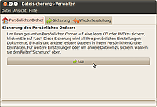
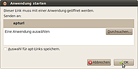
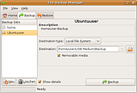
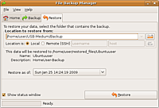

Pybackpack
Archivierte Anleitung
Dieser Artikel wurde archiviert, da er - oder Teile daraus - nur noch unter einer älteren Ubuntu-Version nutzbar ist. Diese Anleitung wird vom Wiki-Team weder auf Richtigkeit überprüft noch anderweitig gepflegt. Zusätzlich wurde der Artikel für weitere Änderungen gesperrt.
Zum Verständnis dieses Artikels sind folgende Seiten hilfreich:
Pybackpack  ist eine grafische Bedieneroberfläche für die Datensicherungs-Lösung rdiff-backup für GNOME. Das Programm wurde zuerst von Dave Arter für den Google Summer of Code in 2005 entwickelt und später von Andrew Price gepflegt. Die Bedienoberfläche ist in deutsch gehalten.
ist eine grafische Bedieneroberfläche für die Datensicherungs-Lösung rdiff-backup für GNOME. Das Programm wurde zuerst von Dave Arter für den Google Summer of Code in 2005 entwickelt und später von Andrew Price gepflegt. Die Bedienoberfläche ist in deutsch gehalten.
Pybackpack ermöglicht eine inkrementelle Datensicherung auf beliebige interne und externe Medien wie Festplatten, USB-Laufwerke, CD/DVD. Ferner werden Datensicherungen mittels SSH-Verbindung über das Netzwerk unterstützt und sorgt dabei für eine Minimierung der übertragenen Datenmenge.
Die Entwicklung von pybackpack wurde im Sommer 2012 eingestellt . Ab Ubuntu 14.04 befindet sich das Paket auch nicht mehr in den offiziellen Paketquellen.
Einsatzmöglichkeiten¶

Geeignet, wenn...
ein einfaches Sicherungssystem benötigt wird (beispielsweise für einen Desktop-Rechner)
mehrere Versions-Stände des zu sichernden Datenbestandes platzsparend gehalten werden sollen ("Inkrementelles Backup")
eine Datensicherung über das Netzwerk erfolgen soll (mit Minimierung der übertragenen Datenmenge)
Nicht geeignet, wenn...
eine Aufteilung der Sicherungssätze auf mehrere Datenträger erforderlich ist
Installation¶

Folgende Pakete müssen installiert [1] werden:
pybackpack (universe, nur bis Ubuntu 12.04)
 mit apturl
mit apturl
Paketliste zum Kopieren:
sudo apt-get install pybackpack
sudo aptitude install pybackpack
File Backup Manager starten¶
Das Programm kann mit Eingabe von pybackpack gestartet werden [2]. Es erscheint eine Maske mit einer voreingestellten Home-Regel für die Sicherung des /home Verzeichnisses auf eine CD oder DVD.
Achtung!
Pybackpack prüft weder ob das Backup tatsächlich auf eine CD oder DVD passt, noch ob genügend temporärer Speicherplatz vorhanden ist. Außerdem verzichtet man damit auf den größten Vorteil von rdiff-backup: Die platzsparende Archivierung von alten Sicherungen.
Regeln¶

Im Reiter "Backup" werden die Regeln verwaltet. In der linken Auswahlleiste "Backup Sets" sind die bestehenden Regeln aufgelistet und können dort bearbeitet werden. Rechts neben der Auswahlleiste sind die Eigenschaften der ausgewählten Regel sichtbar.
Die Standard Regel "Home" ist bereits angelegt und kann weder gelöscht, noch geändert werden.
Daher empfiehlt es sich, eine oder mehrere eigene Regeln anzulegen - für die meisten Fälle reicht die pauschale Sicherung von /home auf eine externe Festplatte. Zum Erstellen einer neuen Regel wird ein Wizard gestartet der den Benutzer Schritt für Schritt durch das Anlegen der Regel führt.
Mit der Schaltfläche "neu" wird eine neue Regel angelegt und ein Assistent gestartet, bei dem folgende Angaben zu machen sind:
Name und Beschreibung der Regel
Typ des Sicherungsziels (lokales Dateisystem, CD/DVD, Remote Host)
Zielverzeichnis der Regel auf dem Sicherungsziel
Das Optionsfeld "This is a removable device" bewirkt bei der Ausführung einer Datensicherung den Hinweis, das externe Gerät anzuschließen und einzuhängen.
Hinweis:
Standardmäßig werden versteckte Dateien nicht angezeigt.
Die zu sichernden Quellen werden ausgewählt und mit der Schaltfläche "include in set" zur Regel hinzugefügt. Verzeichnisse und Dateien, die nicht mitgesichert werden sollen, werden mit der Schaltfläche "Exclude from set" aus der Regel ausgeschlossen.
Die Regel wird noch einmal zusammengefasst angezeigt und es gibt die Möglichkeit, mit der Schaltfläche "zurück" die Einstellungen nochmal zu verändern.
Es folgt eine Bestätigungsmaske mit dem Hinweis, dass die Regel erfolgreich angelegt wurde. Durch Bestätigen der Schaltfläche "Anwenden" wird die Regel gespeichert und erscheint nun in der Maske der angelegten Regeln.
Bereits angelegte Regeln können über die Maske nicht mehr bearbeitet werden. Eine auflistung der Quellverzeichnisse wird in die Datei ~/.pybackpack/sets/Regel/filelist eingetragen. Diese Datei kann nachträglich mit einem Editor verändert werden. Die Regel Eigenschaften werden in die Datei ~/.pybackpack/sets/Regel/set.ini eingetragen und können ebenfalls mit einem Editor nachträglich verändert werden.
Datensicherung¶
Die gewünschte Regel wird in der linken Leiste "Backup Sets" ausgewählt und mit der Schaltfläche "Backup" ausgeführt. Das Optionsfeld "Show details" erwirkt eine zusätzliche Informations-Maske in der der Fortschritt der Datensicherung angezeigt wird.
Während des Verlaufs der Datensicherung tut sich auf der Maske nicht viel. Es kann sogar vorkommen, dass der Maskeninhalt verschwindet... aber keine Sorge, die Sicherung läuft noch.
Wiederherstellung¶

Im Reiter "Restore" wird für die Wiederherstellung eines Datenstands das Verzeichnis der entsprechenden Sicherung ausgewählt.
Es erfolgt eine Abfrage der wiederherzustellenden Inkremente (Datumsangabe). Nach der Auswahl des wiederherzustellenden Inkrements wird die Wiederherstellung mit der Schaltfläche "Restore" ausgeführt.
Hinweis:
Die aktuellen Daten können auch direkt aus dem Verzeichnis der entsprechenden Sicherung heraus kopiert werden.

- Erstellt mit Inyoka
-
 2004 – 2017 ubuntuusers.de • Einige Rechte vorbehalten
2004 – 2017 ubuntuusers.de • Einige Rechte vorbehalten
Lizenz • Kontakt • Datenschutz • Impressum • Serverstatus -
Serverhousing gespendet von